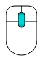

Modelul mouse-ului in FreeCAD este constituit din comenzi folosite la navigarea spatiului 3D si interactiunea cu obiectele afisate. In versiunea actuala exista trei moduri diferite de navigare. Modul implicit este numit "Navigare CAD" si este foarte simplu si practic, dar FreeCAD are doua stiluri alternative modelate dupa navigarea in Inventor si Blender.
Contents
Modul de lucru cu obiecte este comun pentru toate paletele. Urmatoarele actiuni cu mouse-ul pot fi folosite pentru controlul pozitiei si modului de vizualizare, in functie de stilul de navigare selectat.
Exista doua moduri de a schimba stilul de navigare:
- In dialogul pentru preferinte, sectiunea Afisare, tab-ul Vizualizare 3D;
- Click-dreapta in spatiu liber in zona de vizualizare 3D, selectand Stil de navigare in meniul contextual.
Acesta este modul de navigare implicit si permite utilizatorului un control simplu al vizualizarii; nu este nevoie de folosirea tastaturii decat pentru selectie multipla.
| Selectare | Translatie | Zoom | Rotire |
|---|---|---|---|

|
 | 
|

|
| Apasati butonul stanga al mouse-ului deasupra obiectului de selectat. Apasarea tastei CTRL permite selectarea mai multor obiecte. | Apasati butonul din mijloc si miscati mouse-ul pentru a translata vizualizarea. | Folositi rotita mouse-ului pentru a mari sau micsora. | Apasati mai intai butonul din mijloc al mouse-ului, tineti-l apasat si apasati butonul stanga al mouse-ului si mutati-l in directia dorita. Functioneaza ca o bila ce se roteste in jurul centrului. Daca eliberati butoanele inainte de a inceta miscarea vizualizarea va continua sa se roteascain jurul centrului, daca aceasta caracteristica e activata. Dublu-click folosind butonul mijlociu pe oricare parte a unui obiect seteaza noul centru de rotatie si panorameaza pe acest punct. |
In acest tip de navigare nu exista selectie cu mouse-ul. Pentru selectare trebuie apasata tasta CTRL.
In acest mod nu exista translatie doar cu mouse-ul. Pentru a face asta trebuie tinuta apasata tasta SHIFT.
In Touchpad Navigation, neither panning, nor zooming, nor rotating the view, are mouse-only (or touchpad-only) operations.
| Select | Pan | Zoom | Rotate View |
|---|---|---|---|

|
shift+
|
PgUp / PgDn | alt+
|
| Press the left mouse button over an object you want to select. | Hold shift and move the object around. | Use PgUp and PgDn to zoom in and out. | Hold alt and move the pointer. |
| or | or | ||
| shift+ctrl+
|
shift+ctrl+
| ||
| Hold down both the shift and the ctrl keys, press the left mouse button, and move the pointer. | Hold down both the shift and the ctrl keys and move the pointer. |
This navigation style was tailored for usability with touchscreen and pen, but is very usable with mouse too.


{kind=link}
{kind=link}
Notes on Gesture Navigation style:
- on Windows, the actions of two-finger gestures are separated. The action depends on how one starts the gesture. For example, if one starts two-finger pan, the gesture will only pan. Changing the distance between fingers afterwards will not affect the scaling.
In Maya-Gesture Navigation, all view movements are activated pressing ALT and a mouse button, so that it will be needed to have a 3 button mouse in order to correctly use this navigation mode. Alternately it's possible to use gestures as this mode was been developed over the normal Gesture Navigation mode.
Selectarea Obiectelor
Obiectele se selecteaza cu click-stanga in vizualizarea 3D sau selectare in vizualizarea arborescenta.
Exista, de asemenea, si un mecanism de preselectie care evidentiaza obiectele si prezinta informatii despre ele inainte de a fi selectate, doar prin miscarea mouse-ului deasupra lor. Daca nu agreati acest comportament sau calculatorul este incet puteti sa-l suprimati din dialogul pentru preferinte.
Manipularea Obiectelor
FreeCAD ofera manipulatori ce pot fi folositi pentru a schimba aparenta sau proprietatile obiectului.
Un exemplu simplu este planul de taiere ce poate fi activat folosind meniul Vizualizare→Plan de taiere.
Suport Hardware
FreeCAD suporta si un numar de dispozitive 3D.
Mac OS X Issues
Recently we got reports on the forum from Mac users that those mouse button and key combination do not work as expected. Unfortunately, none of the developers owns a Mac, neither do the other regular contributors. We need your help to determine which mouse buttons and key combination work so we can update this wiki.